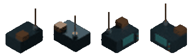

Real output · original content · technical preview
One model.
Four isometric sprites.
This image is the actual output of our Blender → directional renders → sprite recipe → indexed PNG atlas pipeline. No Little Big Adventure game data, sprites, or extracted palette.
Sprite viewer
Select an orientation. The atlas is drawn at 4× scale using nearest-neighbor pixels, without interpolation.
Actual spritesheet — 1× resolution
One row of four 96×112 frames. This is the same PNG used by the viewer above, with no redrawing.
